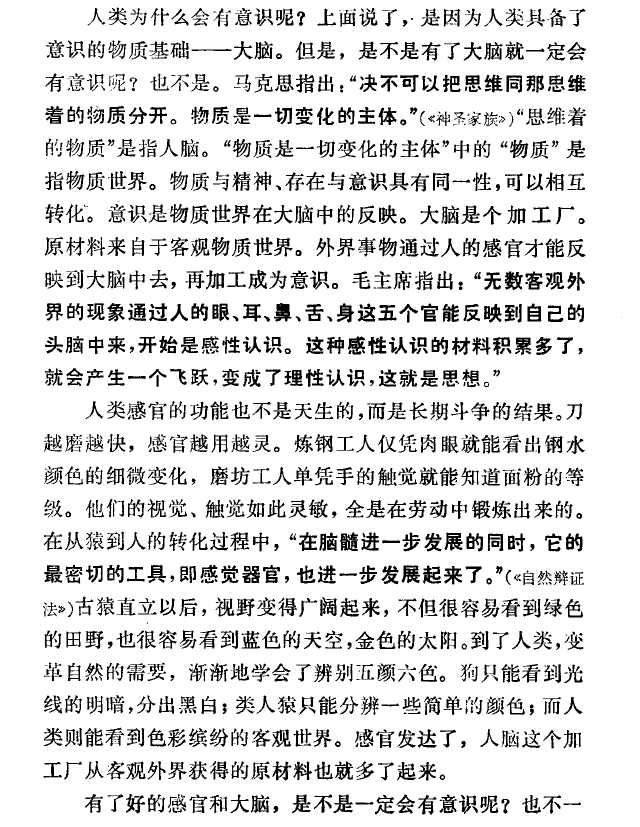
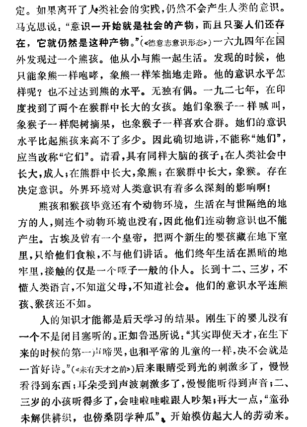
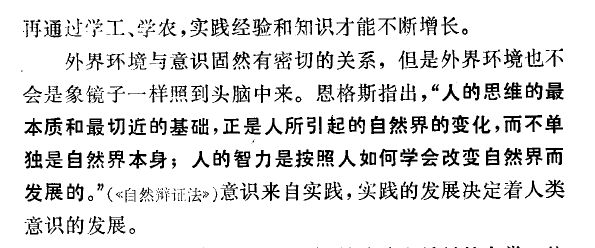

人是只有社会性吗？还是人有社会性和生物性，但社会性决定生物性？
哲学意义上的人只有社会性。社会性不决定生物性（因为哲学意义上的人就没有生物性）。
意识是大脑的功能，人类的活动收到生物规律的约束。
何谓人生?
所谓人生，应该也是和一切物质的属性一样，即是人这种东西的属性。 【毛批:应从分析社会关系出发，不应从哲学定义出发。】
一切事物，均具有一定的实质，【毛批:即该物之特性。】而与其他事物区别。一切物质的属性，均是从各该事物的实质中发生出来的。当这个事物不与其他事物接触时，它的属性是蕴藏着，并不外现出来，这个事物的实质即不能被认识。但这个事物一与其他事物有一定程度的接触时，它的属性就表现出来，人们就可从它表现的属性去认识它的实质。(如真金有不怕火烧的属性，用金与火接触之后，人们就可认识金的实质)。当这个事物与其他事物有了全面的(全过程的)深刻的接触时，就要暴露它全部的实质，【毛批:事物的历史是无穷的，事物与事物的相互关系是无穷的，因而其属性是无穷的，普通所谓”全面暴露”，实只其有限的一些部分，一些片断。】并也暴露它最深刻的最基本【毛批:比较深刻。】的实质，即暴露它的本性与本质。人们就可深刻的认识【毛批:认识也是无穷的。】到这个事物的本质。这是一个普遍的原理。这对于人也是适用的。
人这种东西，是物质的东西，所以人也具有一般的物质性(或称物性，即来信所说的“宇宙的共性”，宇宙万物的共同性，即万物的物质性)。人这种东西，又是动物的一部分，所以人也具有一般的动物性(或称兽性，即来信所说的“动物的共性”)。
但人这种东西，又是一种特殊的最高等的动物，一种发展到了最高形态的动物，不独可以与其他物质区别开来，而且与其他一切动物也有显然的一定实质上的区别。所以人除开具有一般的物质性与动物性之外，还具有特殊的为其他一切物质一切动物所没有的人性。所以一般的说来，人性也是一种物质性、一种动物性；但是特殊的来说，即在一定的程度上来说，人性与-般的物质性、一般的动物性又应该也可以区别开来。一切把人性与物质性动物性绝对区别开来的人性哲学(如许多宗教家及绝对的唯心论者)都是错误的；但一切把人性与物质性动物性不加区别的哲学，也是错误的。
人与其他动物在本质上的区别是什么?
人与其他动物最基本的区别，就在于人是有思想的。【毛批:最基本区别是人的社会性，人是制造工具的动物，人是从事社会生产的动物，人是阶级斗争的动物(一定历史时期)，一句话，人是社会的动物，不是有无思想。一切动物都有精神现象，高等动物有感情，记忆，还有推理能力，人不过有高级精神现象，故不是最基本特征。】人的脑筋及其全部神经系统特别发达(这是长期劳动长期斗争的结果)，所以人能理解自然界各种事物发展的规律性，能认识客观事物的本质之发展过程，能认识各种现象之间相互的内部联系；因而人就有可能按照客观事物发展的规律去改造客观事物，去进行劳动生产，去制造工具，去改造世界。这是一切其他动物所没有的(其他动物至多只有思想的萌芽，而无完备的思想而不能制造工具)。这只有人才特具的。这就是人与其他动物最本质的区别。(其它一切的区别都是形式上的，不是本质的)。【毛批:这是进化了的人，不是原始人，原始人与猴子的区别只在能否制造工具一点上。自从人能制造石枪木棒以从事生产，人才第一次与猴子及其他动物区别开来，不是因有较猴子高明的思想才与它们区别开来，这是唯物史观与唯心史观的分水岭。】
因为人是最高等的有完备思想的动物，【毛批：人的思想是历史地发生与发展着的，不是一开始就完备的，也永远不能完备。】所以人除开具有一般的物质性动物性之外，人还具有特殊的主观能动性，即灵性【毛批:动物亦有。】、理性等。即人能够思想，能够用思想去把握各个客观事物和各个现象之间的相互联系，并能在认识客观事物的规律性之后使自己的行动去适合这种规律，使自己的行动具有意识性、计划性，自觉的不逾越客观规律之外。即是人的思想行动之能够自觉的规律化。亦即孔子所说的能够，“从心所欲，不逾矩”。【毛批:这些在人类是历史地进化的，在一个人的一生也是历史地进化的，小孩子不懂得规律性，孔子七十才不逾矩。阶级社会内没落阶级不懂得规律性。】所以“人为万物之灵”，人是有理性的动物。【毛批:这是唯心论的社会观，人是物质发展的一个高级形态，不是最终形态，它将来还要发展，不是什么万物之灵。人首先是社会的动物，资产阶级总是强调人的理性(精神)，我们不应如此。】
人能把自己与自然界区别开来，并利用自然界去改造自然界(相对的与自然界对立起来)。【毛批:这也是历史地进化的，不是一下子如此的。人最初是不能将自己同外界区别的，是一个统一的宇宙观，随着人能制造较进步工具而有较进步生产，人才能逐渐使自已区别于自然界，并建立自己同自然界对立而又统一的宇宙观。这种宇宙观也是历史的，将来的对立统一观的内容与现在又将不同。】
但是人所特具的这种主观能动性、灵性、理性等，即人的思想，也并不是什么别的东西，也是一种特殊的物性 ——人脑的属性。这种属性也和其他物质的属性一样，要人脑发展到一定的程度(通常要在六、七岁以后)，并须要与其他事物有一定程度的接触(经过五官的感觉)之后，它才能产生，才能表现出来，否则人就不能有思想。
人的思想，任何时候都不能离开物质而独立产生，独立存在。因为人的思想本身，就是一种特殊物质的属性，就是客观事物发展的规律性在人的头脑中的反映。【毛批：这是两个不同范畴的问题。】
所以人不论是怎样的“为万物之灵”，但人决不是神仙，人的思想也决不是什么神秘的不可解释的东西，人永远不能作神仙，即人永远不能解脱自己的物质性与动物性，【毛批:否，人是社会的动物，人永远不能脱离社会而孤立。】主观能动性永远不能超越客观的限制性，思想永远不能离开外界的物质而独自产生与独立存在，完全不是如佛家(其他宗教家本质上是相同的)所说的那样，“无声无色，湛然寂然”，“无论用什么方法也不起波动”(来信用语)，完全解脱红尘，【毛批：红尘即社会。】往天上去，去到空虚，而又似乎是存在。所以人不能有神性，【毛批:人不能离社会而为神。】人性不是神性、鬼性。人没有神性、鬼性。思想在根本上不能离开物质而独立存在。主观在根本上不能离开客观而独立存在。【毛批：这是两个问题，思想不能离开物质，精神现象是人脑的属性，讲的是脑子与脑子的属性的关系，一种物质运动形态与别一种物质运动形态(精神是一种特殊的物质)的关系，这是一个问题。主观反映客观，讲的是存在决定意识，社会存在决定社会意识，内心与外物的关系，这是另外一个问题，这里把它们混同了。】
把人与其他动物区别开来，又把人与妄诞中的神仙区别开来，这就确定了人的自然本质。把人性与一般的物质性动物性区别开来，又把人性与妄诞中的神性鬼性区别开来，这就确定了人的自然本性。【毛批:当作人的特点、特性、特征，只是一个人的社会性——人是社会的动物，自然性、动物性等等不是人的特性。人是动物，不是植物矿物，这是无疑义的，无问题的。人是一种什么动物?这就成为问题，几十万年直至资产阶级的费尔巴哈还解答得不正确，只待马克思才正确地答复了这个问题。既说人，它只有一种基本特性——社会性，不应该说它有两种基本特性:一是动物性，一是社会性，这样说就不好了，就是二元论，实际就是唯心论。】
孟子说:“食色性也”，王阳明强调“好好色，恶恶嗅”的“人性”。但孟子与王阳明在这里所说的人性，不独是没有说出人的社会性，就是人的自然性，也没有说出来。因为食色之性，好好色、恶恶嗅之性，不独是人有，其他许多动物也是有的【毛批:人的食色是社会的，与动物的食色根本区别。】(其他许多动物都好吃好的东西，甚至比人还长得更美色，都有恶恶嗅的嗅觉)。【毛批:这是两种不同范畴的好恶；把它们等同起来，就是庸俗唯物论。】他们在这里只说出人的动物性的一部分。【毛批：人的食色并非动物性而是社会性。】如果把这当作人性，就是片面的说法，就是偏向。就不能把人性与兽性区别开来。【毛批:人的一切都与兽性区别开来，没有不区别的。】如王阳明主张“狂”，六朝文士甚至认为人在当时可以不穿裤子，就是强调人的动物性。【毛批：人不穿裤子并不是动物性，还是一个社会的动物。】程颢程颐与朱熹则是相反的，他们抓住人的理性这一面，故意强调起来，主观的机械的制作许多规律来限制人们的思想与行动，来摧残人们的自然性。【毛批:应说来摧残人们的社会性，程朱把人们当作非人所谓“圣贤”来处理，所以是错的。】(程朱已经察觉到人的自然性与社会性，把性分为义理之性与气质之性。 【毛批:正是错误的二元论，实即唯心论。】但他们认为义理之性是善的，气质之性是恶的,人能克制气质之性，发扬义理之性，就成为圣贤，并以克制气质之性的多少为标准，认为学道功夫就在这里。如是就主张尽量的去故意摧残人的自然性)。【毛批:摧残正当社会性。】这也是一种偏向。【毛批:是完全错的，不止偏向。】因此我希望你在摘引他们的说话时，应该注意。
因为人有思想，而思想是人的主观与客观的矛盾的统一，所以人就有犯错误甚至犯系统的严重的错误之可能（只有人才可能犯错误，其他一切动物差不多都无犯错误的可能，【毛批:不妥，竞争生存的学说，说生物由竞争而遗传而择种留良，避免淘汰，就是避免犯错误的要求，只有矿物才无此种要求。】尤其无犯系统严重错误之可能），人也一定要犯错误(因主观与客观矛盾，可以说完全不犯错误的就不是人)。人是不断犯错误又不断改正错误的(虽然人可以避免犯系统的严重的错误)。所以人在看自己的时候，常常忽视自己主观的能动性，把人降低与普通动物平列，或者又常常夸大自己的主观能动性，把人说成神仙那样。这是人在看自己的时候的两种偏向。
以上是说人的自然性。【毛批：人是社会的动物，人的思想是社会的产物，把思想放在自然性范畴，美国“行为派”(以庸俗唯物论为表形的主观唯心论)正是如此。】但是人的自然性，只是人的一种本性，人还有另一种本性，即是人的社会性【毛批：二元论。】。人的社会性与人的自然性有区别、有矛盾、但是又凝合在一起、并且在基本上是保护着(人类共同的)自然性的。二者互相限制，也互相推移。【毛批:这个观点不妥，当作人，它只是社会的动物，人分成阶级后，只是阶级的人，再也不能多一点，无所谓人类共同的自然性，更无所谓以社会性去保护自然性，人的生命及种族存续，它就是当作社会的人的存续，再无别的。】
何谓人的社会性?
因为人的生活，是社会的生活，必须有维持社会一切人们共同生活的社会规律，这种社会规律，限制着人们的自然性、自然欲望【毛批：不妥。】只能在一定限度之内发展。
因为人为万物之灵，人的思想行动能够自觉的规律化，【毛批:人的自觉是历史地的，不是绝对的。】所以人也就最容易在客观环境的影响之下而引起自身的变化，比一切其他“冥顽不灵”的东西不同。【毛批:人同冥顽不灵的猴子的最初区别，仅仅在于用工具劳动。】人们在不断的社会劳动的过程中，改造着自然界，同时也改造着人们自己，改变着人们自己的本质与本性。【毛批:改变着人们自已的手、脑、五官和思想等等，由各种不同社会结构，改变为各种不同的社会性，只应这样来解释人的性质的改变，否则就是唯心论。】人们的思想形态，是由这些人们经常接触的客观环境的形态与劳动形态来决定的。一定形态的人们的思想，又指挥着人们在一定形态上去行动，并逐渐改变客观环境的形态与劳动形态。
人们的生产劳动，永远是社会的生产劳动。人们相互间在一定的劳动样式的基础上，发生一定样式的生产关系、社会关系、政治关系等(即人们共同生活的规律)，这些一定的关系就决定着人们一定的社会观念形态，即决定着人们一定样式的思想、意识、观点、习惯、心理、道德等。长期的一定的人们的生产样式与生活样式，养成人们在思想行动上的一种特性，这就是人们的社会性。【毛批:这些是对的。】
人们长期按照一定的规律(自然规律与社会规律)去劳动，去生活，【毛批:但是长久地不自觉的，自觉是一个历史过程。】如是也就使人们的思想行动按照这种规律相对的定形化。一定的经济性质，一定的社会性质，决定人们一定的社会意识的性质与伦理道德的性质。一切人们的理性，是自然的，同时也是社会的。【毛批:只是社会的。】
人的自然性，是先天的，是从人这种东西的根据中产生出来的。如人的体质、聪明、本能等(这些东西受后天的影响，但在一个人的一生中不被后天所根本改变)是先天生成的。人的社会性，是后天的，是从各人所处的社会环境条件中养成的，如人的思想、意识、观点、习惯等，是人在生产中斗争中养成的，学会的。【毛批：但前面又把思想意识归入自然范畴，又把聪明归于自然(先天)范畴。】(如驯养很小的野兽，也可使野兽具有某种驯性。)
【毛批:自从人脱离猴子那一天起，一切都是社会的，体质、聪明、本能一概是社会的，不能以在母腹中为先天，出生后才算后天。要说先天，那么，猴子是先天，整个人的历史都是后天。拿体质说，现在的脑、手、五官，完全是在几十万年的劳动中改造过来了，带上社会性了，人的聪明与动物的聪明，人的本能与动物的本能，也完全两样了。人的五官百体聪明能力本于遗传，人们往往把这叫作先天，以便与出生后的社会熏陶相区别，但人的一切遗传都是社会的，是在几十万年中社会生产的结果，不指明这一点，就要堕人唯心论。】
但是自从人类社会发展成为阶级社会以后，人就作为一定阶级的人而存 在。人们的社会性，就被各人在生产斗争中所占的完全不同的阶级地位所决定，人们的社会性，就表现为各种不同的以至相反的人们的阶级性。特定阶级人们的阶级性，分裂了掩盖了人们共同的社会性。【毛批:是分裂了，不是掩盖了。】比如现今社会中各阶级人们所特具的各种不同的特性(如封建地主的等级性、神秘性、残酷性，资本家的垄断性、竞争性、自私性，农民的分散性、落后性、反抗性，工人的进步性、组织性、集中性等)是表现得很明显的。人们阶级性的最高而集中的表现，就成为人们的党派性，特定阶级人们的这种阶级性党派性，就贯穿在这些人们一切具体的思想、言论和行动中，以致使各种军事、政治、学说、艺术和道德等等，都表现着一定的阶级性与党派性。
过去历史上的一切统治阶级，都把自己的阶级性，看作是代表整个人类的人性，并且看作是最善良的人性、自然的人性。而把其他阶级人们的阶级性看作是违反自然人性的例外的恶劣的表现。把他们看作是无人性的人，把他们看作是不够人格的人。过去一切统治阶级都讳言人们的阶级性，并且讳言人们的社会性，【毛批:实在也由于不知道，连最好的资产阶级启蒙学者也不知道。】都把人们的阶级性社会性看作是人们先天的自然性，因为这样，才能巩固统治阶级的阶级地位。所以在过去各种人性学说上，都明显的表现其阶级性。所以有地主阶级的人性论，有资产阶级的人性论，也有无产阶级的人性论。
人是自然的一部分，人是自然人，具体的人又是社会的一分子(在阶级社会中还是一定阶级的一分子)，人又是社会人(或阶级人)。所以人同时具备着自然性与社会性，这就是人性的两个基本方面，这就是人这种东西所有的两种基本属性。【毛批:人是自然界的一部分，这是对的，但这就是说，它是社会人，不是所谓自然人，人是自然界的一个特殊的部分——社会人。】
马克思说：“在其现实性上，人的本质是一切社会关系的总和。”能不能这样理解，就是在说人类跟动物在质上去的区别就是社会性，所以人类没有生物性？
这个我看过，但比如男性的遗精和早晨勃起，这不是生物性吗？又或者天生的性少数是怎么回事？
人是生物但是不具有生物性，会有生理反应和新陈代谢，但是人的本质是社会性。
性少数看情况，性取向方面的其实完全是后天决定的。性认知方面我不清楚有没有天生的，但是绝大部分是实践决定的。社会实践是社会意识的来源，其中就包括对爱情的认知和对性别的认知。
也就是说生理反应和新陈代谢是生物运动？
那一些同性恋说自己天生就喜欢同性这是怎么回事？
生理反应和新陈代谢是人体的活动，但是人生活在阶级社会里，所有的生物运动也有社会性。
不存在先天性取向，都是由其社会实践决定的，阶级社会的人不可能是脱离实践的假想人。想说先天有性取向的，想想难道婴儿也有性取向吗？都是在其成长过程中实践过程中形成的。
1 个赞
性认知是意识跟身体的矛盾吧



那问题就来了，性取向是社会性的，那为什么异性恋占大多数？这是不是也跟社会意识有关吗？而且为什么有些同性恋，一生只喜欢同性，没有转化成异性恋，这是因为社会实践使其性取向固定了吗？
- 1 定。如果离开了人类社会的实践，仍然不会产生人类的意识。
- 2 马克思说：“意识一开始就是社会的产物，而且只要人们还存
- 3 在，它就仍然是这种产物。”（德意志意识形态）一六九四年在国
- 4 外发现过一个熊孩。他从小与熊一起生活。发现的时候，他
- 5 只能象熊一样咆哮，象熊一样笨拙地走路。他的意识水平怎
- 6 样呢？也不过达到熊的水平。无独有偶。一九二七年，在印
- 7 度找到了两个在猴群中长大的女孩。她们象猴子一样赋叫，
- 8 象猴子一样爬树摘果，也象猴子一样喜欢合群。她们的意识
- 9 水平比起熊孩来高不了多少。因此确切地讲，不能称“她们”，
- 10 应当改称“它们”。请看，具有同样大脑的孩子：在人类社会中
- 11 长大，成人；在熊群中长大，象熊；在猴群中长大，象猴。存在
- 12 决定意识。外界环境对人类意识有着多么深刻的影响啊！
- 13 熊孩和猴孩毕竟还有个动物环境，生活在与世隔绝的地
- 14 方的人，则连个动物环境也没有，因此他们连动物意识也不能
- 15 产生。古埃及曾有一个皇帝，把两个新生的婴孩藏在地下室
- 16 里，只给他们食粮，不与他们讲话。他们终年生活在黑暗的地
- 17 牢里，接触的仅是一个哑子一般的仆人。长到十二、三岁，不
- 18 懂人类语言，不知道父母，不知道社会。他们的意识水平连熊
- 19 孩、猴孩还不如。
- 20 人的知识才能都是后天学习的结果。刚生下的婴儿没有
- 21 一个不是闭目塞听的。正如鲁迅所说：“其实即使天才，在生下
- 22 来的时候的第一声啼哭，也和平常的儿童的一样，决不会就是
- 23 一首好诗。”（未有天才之前）后来眼睛受到光的刺激多了，慢慢
- 24 看得到东西；耳朵受到声波刺激多了，慢慢能听得到声音；二、
- 25 三岁的小孩听得多了，会哇啦哇啦跟人吵架；再大一点，“童孙
- 26 未解供耕织，也傍桑阴学种瓜”、开始模仿起大人的劳动来。
- 1 人类为什么会有意识呢？上面说了，是因为人类具备了
- 2 意识的物质基础一一大脑。但是，是不是有了大脑就一定会
- 3 有意识呢？也不是。马克思指出：“决不可以把思维同那思维
- 4 着的物质分开。物质是一切变化的主体。”(“神圣家族>)“思维着
- 5 的物质”是指人脑。“物质是一切变化的主体”中的“物质”是
- 6 指物质世界。物质与精神、存在与意识具有同一性，可以相互
- 7 转化。意识是物质世界在大脑中的反映。大脑是个加工厂。
- 8 原材料来自于客观物质世界。外界事物通过人的感官才能反
- 9 映到大脑中去，再加工成为意识。毛主席指出：“无数客观外
- 10 界的现象通过人的眼、耳、鼻、舌、身这五个官能反映到自己的
- 11 头脑中来，开始是感性认识。这种感性认识的材料积累多了，
- 12 就会产生一个飞跃，变成了理性认识，这就是思想。”
- 13 人类感官的功能也不是天生的，而是长期斗争的结果。刀
- 14 越磨越快，感官越用越灵。炼钢工人仪凭肉眼就能看出钢水
- 15 颜色的细微变化，磨坊工人单凭手的触觉就能知道面粉的等
- 16 级。他们的视觉、触觉如此灵敏，全是在劳动中锻炼出来的。
- 17 在从猿到人的转化过程中，“在脑髓进一步发展的同时，它的
- 18 最密切的工具，即感觉器官，也进一步发展起来了。”(《自然辩证
- 19 法古猿直立以后，视野变得广阔起来，不但很容易看到绿色
- 20 的田野，也很容易看到蓝色的天空，金色的太阳。到了人类，变
- 21 革自然的需要，渐渐地学会了辨别五颜六色。狗只能看到光
- 22 线的明暗，分出黑白；类人猿只能分辨一些简单的颜色；而人
- 23 类则能看到色彩缤纷的客观世界。感官发达了，人脑这个加
- 24 工厂从客观外界获得的原材料也就多了起来。
- 25 有了好的感官和大脑，是不是一定会有意识呢？也不一
- 1 再通过学工、学农，实践经验和知识才能不断增长。
- 2 外界环境与意识固然有密切的关系，但是外界环境也不
- 3 会是象镜子一样照到头脑中来。恩格斯指出，“人的思维的最
- 4 本质和最切近的基础，正是人所引起的自然界的变化，而不单
- 5 独是自然界本身；人的智力是按照人如何学会改变自然界而
- 6 发展的。”(<自然辩证法)意识来自实践，实践的发展决定着人类
- 7 意识的发展。
这是什么书？
异性恋占多数是私有制社会下的必然主流，财产私有制和继承制，以及现代资产阶级社会中对劳动力再生产和产业后备军的需要，必然宣传异性恋为主流以促进社会再生产，但是这一点主要针对劳动人民，对剥削阶级影响是没有那么大的。资产阶级中非异性恋性取向并不很收到抵制了。而无产阶级的同性恋则一直收到资产阶级的抵制，中修对同性恋文艺作品的疯狂抵制就是一个体现，因为这与私有制和资产阶级剥削的需要相悖。
社会存在决定社会意识，社会意识对社会存在有能动反作用，也就是人有主观能动性，比如因为小时候被异性性侵，就是社会存在方面的诱因，导致人形成反感异性的世界观，即使社会一直宣传异性恋才是正统他也大概率能继续贯彻自己的实践，当然也要看其长期的社会实践会不会能够改变他的世界观。
1 个赞
在無產階級文化大革命期間，同性戀並不受到主流關注，但是佳話仍然盛傳。
對其作者的大量的罰款是其補充，在鄧小平統治下1980年1月1日頒佈的《刑法》宣佈同性戀是非法的，犯有“流氓罪”。
1997年《中華人民共和國刑法》修訂，廢除了模糊地將同性性行為入罪的流氓罪[7]。
资产阶级需要后代继承其家产，同性恋基本上不会有后代，为什么不抵制？至于对无产阶级同性恋的抵制，那为什么欧美等国是支持同性恋的？还有“小时候被异性性侵”这个例子，这个也确实有，但有些同性恋就没有这种童年阴影，也喜欢同性，那什么样的社会实践，能使他们喜欢同性呢？
人是社会关系的总和。 内因是根据，外因是条件，外因通过内因而起作用。
性别（gender）有其生理基础，但是我们对于性别的认知总是通过具体的社会这种媒介来实现的。
一个人即使没有形成对于自己性别认同的自觉，也会被裹挟其中。
1 个赞